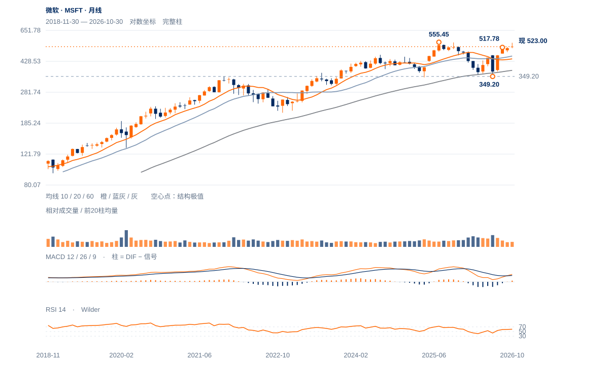

短线偏弱
未来1—5日偏向弱反抽，531.22—537.22供应带未收回，518—520承接仍需后续价格验证。
未来1—5日偏向弱反抽，531.22—537.22供应带未收回，518—520承接仍需后续价格验证。
未来2—6周以505—559高位回测为主。重返531.22并完成537.22原过滤，才支持重新上试多年高区；504.96失守则这段反弹的质量明显下降。
未来1—3个月偏向多年高区下方消化。连续两周收盘高于559.15并回测保持，才升级为长线新高扩展；若周收失守504.96且不能回收，460.55完整20月均衡成为下一中期参照。

展开图表 ↗2025年7月555.45、10月553.72与今年11月559.15落在同一多年高区。2026年3月356.28、6月349.20低区后出现约60%的大反弹，当前523仍高于10/20月均衡443.11/460.55，但尚未站稳555—559。较合理的长线描述是大型区间上沿试探，长期新升段仍需突破多年高区。
8月517.78高区现转为回测区域，当前523略在其上；11月4日559.15大高后，531.22原支持失守，537.22两日回收也未完成。大反弹背景尚在，近端却存在上沿突破不充分后的回撤风险。
349—559大型区间上沿再次受检验，531.22旧支持转为近端反抽阻力。555—559上方保持，才有长线新扩张依据。
11日收521.13低于原531.22，12日仅收523.00；当日最高529.66也未触及531.22。原支持是否转成反抽阻力比RSI小幅回升更有分辨力。
12日上影占振幅68.9%、量比0.70，20日OBV方向余额约-0.315。10—11日连续下行后仅小幅回收，尚缺有力的相反跟进。
现价略高于50日线518.72，远高于200日线440.97；截至11月6日完整周收530.61在10/30周均线上方、周RSI64.85。近端受损还不等同长期下跌反转。
先完整日收回531.22；原537.22连续两日收盘确认另行计数。
原531.22受损已触发且不下移；新近端以518.45日收失守观察，504.96为更大波谷。
长期均衡已被大幅收回，517.78附近暂有承接；若高位缩量只是供应减少，531—537回收后可较快重试559。
| 周期 | 最后完整柱 | 图示柱数 | RSI14 | ATR14 | MACD柱 |
|---|---|---|---|---|---|
| 日线 | 2026-11-12 | 185 | 48.44161 | 15.41893 | -1.61573 |
| 周线 | 2026-11-06 | 156 | 64.84622 | 29.18846 | 4.29166 |
| 月线 | 2026-10-30 | 96 | 59.95018 | 51.81529 | 3.44796 |
美股价格拆股调整、不含分红再投资。完整周线至11月6日；11月进行中。指数成交量与全成分广度受限。